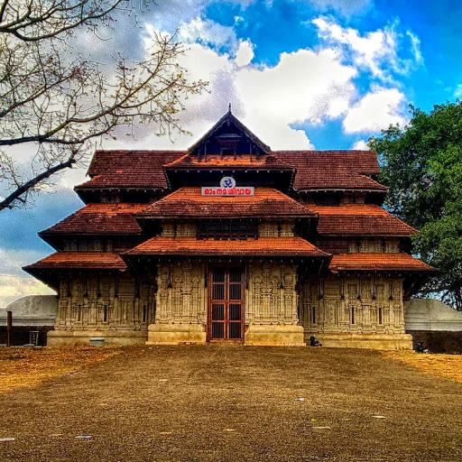

ATHIRAPPALLY
Athirappilly Falls, is situated in Athirappilly Panchayat in Chalakudy Taluk of Thrissur District in Kerala, India on the Chalakudy River, which originates from the upper reaches of the Western Ghats at the entrance to the Sholayar ranges.

PEECHI DAM
Peechi Dam thrissur is situated 22 km outside Thrissur city in Kerala, India. The dam was started as an irrigation project for the surrounding villages in Thrissur

VADAKKUMNATHA TEMPLE
Vadakkumnathan Temple is an ancient Hindu temple dedicated to Shiva at city of Thrissur, of Kerala state in India. This temple is a classical example of the architectural style of Kerala and has one monumental tower on each of the four sides in addition to a kuttambalam.